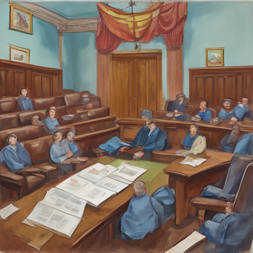

Today, I spent hours poring over Supreme Court decisions for clues about Medicaid reform. Jim Chalmers' advocacy on the matter caught my attention, so I decided to learn more about his role and how it might influence the court's rulings.

Keywords: Supreme Court, Jim Chalmers, Medicaid work rules
Fictional diary entry.